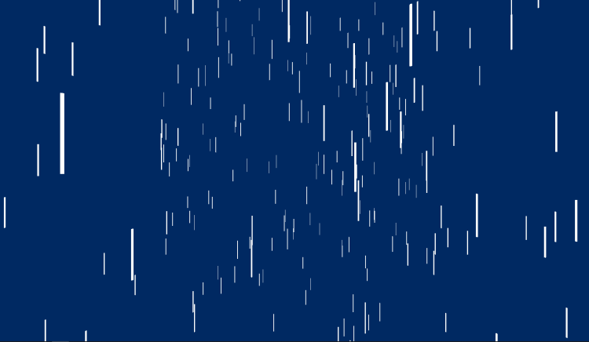

Pour cet exercice, vous allez devoir faire une scène de pluie nocturne. Sur une scène au fond bleu nuit, vous allez devoir créer une pluie diluvienne dont les gouttes d'eau seront représentées par des cylindres blancs utilisant un matériau qui n'est pas sensible à la lumière.
Toutes les gouttes d'eau devront apparaître hors champ, au-dessus de la caméra, à des coordonnées aléatoires (comprises entre 0 et 10 sur les axes des x et des z) et tomber jusqu’à ce qu'elles atteignent 0 sur l'axe des y. Une fois atteint, la goutte devra être déplacée à de nouvelles coordonnées aléatoires, au-dessus de la caméra, et ainsi de suite.
Pour vous aider, voici une fonction JavaScript permettant de générer un nombre aléatoire entre 0 et 10 :
See the Pen Untitled by OpenSpirit (@OpenSpirit) on CodePen.
La position de départ des gouttes doit utiliser 3 coordonnées aléatoires, pour les axes x, y et z. Cependant, il faut ajouter une valeur fixe à l'axe des y pour s'assurer que toutes les gouttes apparaissent hors champ, tout en conservant un décalage entre les gouttes.
Il ne suffit que d'une Geometry et d'un Material pour créer autant de Mesh que l'on souhaite.
Vous pouvez utiliser le tableau scene.children pour parcourir toutes les gouttes : il ne doit y avoir rien d'autre sur la scène (la lumière n'est pas utile, puisque les gouttes ne doivent pas y être sensibles).
La première étape est de définir la position de départ de chaque goutte. Pour cela, il faut créer une fonction prenant en paramètre une goutte et qui règle sa position aléatoirement : chaque coordonnée devra recevoir le résultat de la fonction getRandomNumber(), donnée dans l'énoncé. L'axe des y devra cependant être augmenté de 10 unités afin que les gouttes apparaissent hors champ. Cette fonction sera appelée au moment de l'initialisation des gouttes, mais aussi pour replacer les gouttes qui sont tombées hors champ.
See the Pen Untitled by OpenSpirit (@OpenSpirit) on CodePen.
Il faut ensuite créer les gouttes. Chaque goutte est un cylindre qui n'est pas sensible à la lumière : il faut donc utiliser la CylinderGeometry et le MeshBasicMaterial pour créer toutes les Mesh de nos gouttes.
See the Pen Untitled by OpenSpirit (@OpenSpirit) on CodePen.
Maintenant que les gouttes sont créées, il faut les faire tomber. Pour cela, il suffit de parcourir tous les enfants de la scène et de diminuer leur position sur l'axe des y. Si la position est inférieure à 0, il faut replacer la goutte aléatoirement.
See the Pen Untitled by OpenSpirit (@OpenSpirit) on CodePen.
Une fois la caméra placée et le reste des éléments créé (scène, renderer...), le code final est :
See the Pen Untitled by OpenSpirit (@OpenSpirit) on CodePen.